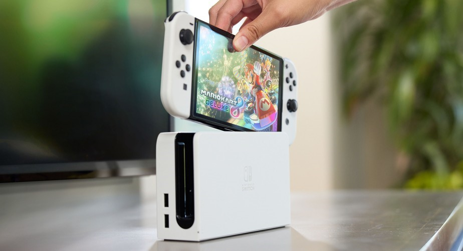

Switch é console mais vendido da história da Nintendo
De forma oficial a Nintendo revelou que o Switch quebrou recordes de venda, ultrapassando o Wii
/i.s3.glbimg.com/v1/AUTH_08fbf48bc0524877943fe86e43087e7a/internal_photos/bs/2022/E/8/e6VMBlSSaMwC98mb428w/nintendoswitcholedmodel-tabletop-01.jpg "Foto: Divulgação/Nintendo")
Agora é oficial: o Switch é o console mais vendido da Nintendo de todos os tempos. O video game ultrapassou o Wii, que até então estava no topo da lista. A informação foi revelada pela Nintendo, em um relatório financeiro divulgado. De acordo com o documento, o Switch vendeu 103,54 milhões de unidades até o dia 31 de dezembro de 2021, ficando acima dos 101, 63 milhões do saudoso Wii.
